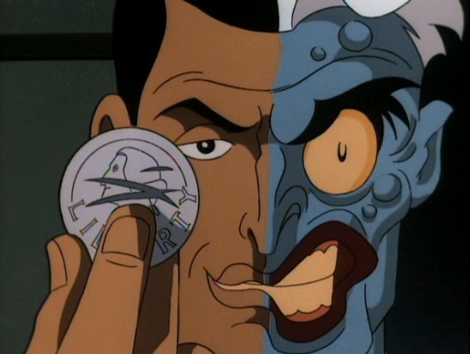
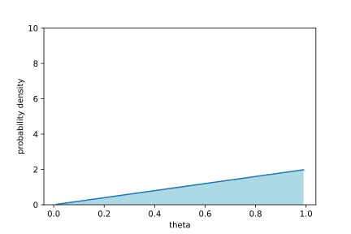
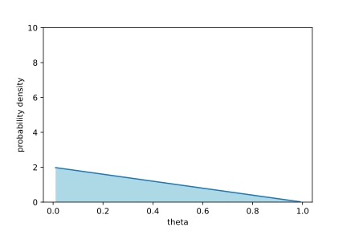

Machine Learning for Power X - Water
Henry O. Jacobs
May 28, 2021
Summary
- Calibration
- Plato
- Mediocre ideas
- dog detection
- Convolution
- Two-face
Calibration
- Press the "Calibration button" on the PowerX app
- Fill the PowerX provided container to fill line.
- Press "Done".
- Repeat $n$ times (perhaps with a different sized bucket)

???
- Why not have the user provide pipe-width?
- How much water?
- How many repeats?
Sensor noise
- Estimate standard-error of readings
- Randomize over devices/pipes/faucets
Inference


mediocre ideas
Computer vision model

from arXiv/abs/1506.02640
Spotify inspired

People at Spotify might know how to detect what instrument is playing and when.
Critiques of CV inspired models
streams are not fixed-length arrays
might perform badly for events with variable time-scales (e.g. showers)
hard to debug (not modular)
Event based model
Event based model
As data arrives:- Detect when windows start
- Classify open-ended window
- Detect end-times
- Classify the outlet type and water-usage.
Architecture

Start time detection
Consider a convolution $x \stackrel{\kappa}{\mapsto} z$ $$ z(t) = \kappa_0 x(t) + \kappa_1 x(t-1) + \dots + \kappa_{10} x(t-10) $$
Convolution

Open window classification
At each timestep, cobble a feature vector
- current window length
- initial jump size
- water consumed thus far (??)
- max/min/mean/variance values of convolved signal
- ...
Then use logistic regression on $\mathbb{R}^n$.
(or use a recurrant neural network)
End time detection
Closed window detection
Same as open-window classification, but with end-time features
Overview
(be quick)
Concerns
- Overlapping windows (rarity and concurrency)
- Annual seasonality
- Regional overfit
- Insufficient data
- Cloud orchestration (edge computing?)
Otherwise...

Model adaptability

Various ways to avoid retraining models
Adding fields
A single binary field would split data into two. So could try training two models.
A single $n$-ary field would split data into $n$ components. So ...
Adding fields
we cluster.

or just redesign the model.
Personalization
Example: Daily water usage
- Monitor sample mean/variance on a sliding window
- Grow window until convergence (or give-up)
More generally, we would do Bayesian updates to a probabilistic model $$ \Pr(\theta \mid x_t) = \frac{\Pr(x_t \mid \theta) \Pr(\theta) }{\Pr(x_t)} $$
User feedback

User feedback
Imagine we have two models. We'd like to know which one is better
This is identical to estimating the probability of flipping heads on a (biased) coin.
Coin flips
Coin flips
If we have a coin with an unknown bias $0 \leq \theta \leq 1$ distributed according to $\Pr(\theta) = 1$

and flip the coin once.
Coin flips
If it's heads then \[ \Pr(\theta | X_0 = \text{heads}) = \theta \] 
If it's tails then \[ \Pr(\theta | X_0 = \text{tails}) = 1-\theta \] 
After many tosses
\[
\Pr( \theta | N_T, N_H) = \theta^{N_T} (1-\theta)^{N_H}
\]

Coin flips (cont)


feedback
Summary
- Calibration
- Plato
- Mediocre ideas
- dog detection
- Convolution
- Two-face